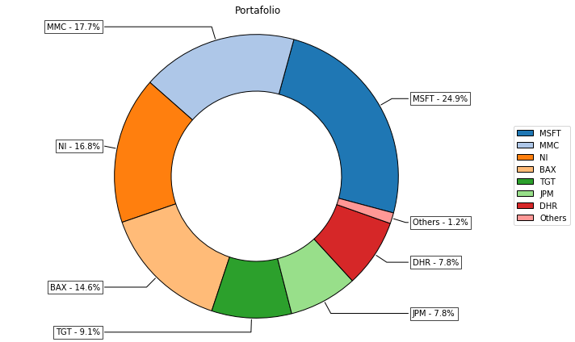
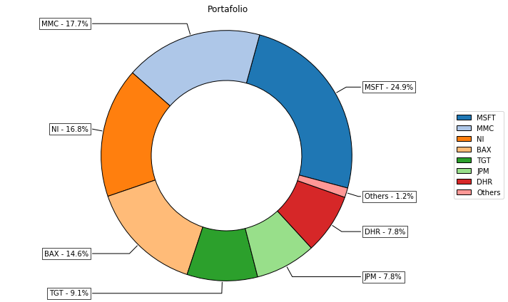

Riskfolio-Lib¶
Quantitative Strategic Asset Allocation, easy for you.
 

{kind=link}
Riskfolio-Lib is a library for making quantitative strategic asset allocation or portfolio optimization in Python. It is built on top of CVXPY and closely integrated with pandas data structures.
Some of key functionality that Riskfolio-Lib offers:
Portfolio optimization with 4 objective functions (Minimum Risk, Maximum Return, Maximum Risk Adjusted Return Ratio and Maximum Utility Function)
Portfolio optimization with 10 convex risk measures (Std. Dev., MAD, CVaR, Maximum Drawdown, among others)
Portfolio optimization with Black Litterman model.
Portfolio optimization with Risk Factors model.
Portfolio optimization with constraints on tracking error and turnover.
Portfolio optimization with short positions and leverage.
Tools for construct efficient frontier for 10 risk measures.
Tools for construct linear constraints on assets, asset classes and factors.
Tools for construct views on assets and asset classes.
Tools for calculate risk measures.
Tools for visualizing portfolio properties and risk measures.